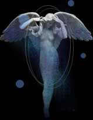

purity
Hy-brasyl
The golden cities I once loved lay fathoms deep beneath grey seas
There were no ill-stars during the days or nights of Hy-brasyl. Fruits were plentiful, and fulfilling, and beasts and men alike followed their nature.
Elements were unchained. The elements danced out escapades on the night sky, or buffeted young souls on sweet zephyrs, waves, rising hills, or warm gushes of harmless fire. Humanity lived in harmony with all that was. Whether out of goodness, or lack of need, no one was tempted to lose his soul for wont of power.
Elders heard an angelic voice when it was their time. They parted from Hy-brasyl fondly; without regret. Who could regret the golden streets, towers, or unspoiled fruits and meats. On their hill, or in their home, they awaited with a patience known today only in Aosda. Death came gently, creeping as a slow, silky sheet over their eyes. The elders simply slipped beneath the waves of Hy-brasyl and drifted on fond memories in Grinneal.
A millenium passed. Some would say it was too short; yet it was the memory to last through all the ages. A man was found in the street, dead, cold. He had lived across the river Cionta. Hy-brasyl mourned his death, but wondered why he had died suddenly, violently, with a pale look across his face.
Thus began the investigation into the nature of the world. Elements were no longer partners for play and imagination, but were tools for discovery. Those that began the discipline, though, found no peace in the answer. Human magic was born; along with it men gained a fatal glimpse of the nature of things outside the local harmony.

table of contents